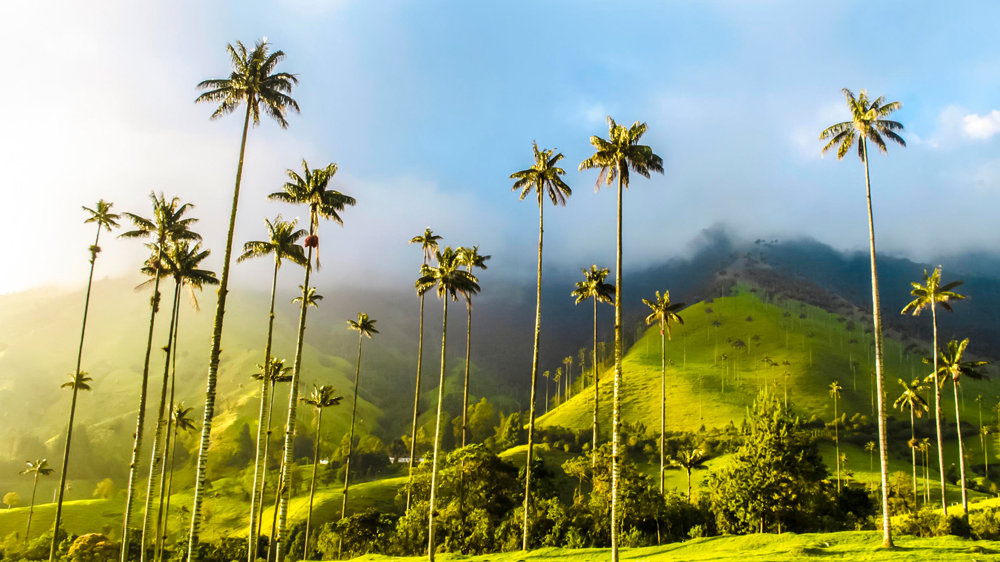

Sitios Turísticos
Comidas Típicas
Descubre los Maravillosos Sitios Turísticos
Ciudad Perdida
Antigua ciudad indígena tayrona, perdida en la selva y descubierta recientemente, ofrece una experiencia de trekking única.
Más información
Cartagena de Indias
Ciudad amurallada llena de historia, con calles empedradas, arquitectura colonial y playas hermosas.
Más información
Parque Nacional Natural Tayrona
Descripción: Área de conservación con playas prístinas, selva tropical y una diversidad única de flora y fauna.
Más información
Islas del Rosario
Archipiélago de islas coralinas con arrecifes de coral, ideales para practicar buceo y snorkel.
Más información
San Agustín
Sitio arqueológico con estatuas precolombinas y tumbas antiguas en un entorno montañoso.
Más información
Desierto de la Tatacoa
Paisaje desértico con formaciones de tierra roja y gris, ideal para la observación de estrellas.
Más información
Cabo de la Vela
Extremo norte de Colombia, con playas extensas y paisajes desérticos, hogar de la comunidad wayúu.
Más información

Salento y Valle de Cocora
Pueblo pintoresco en el eje cafetero, con paisajes de montañas, valles y el icónico árbol de cera.
Más información
Caño Cristales
Conocido como el "río de los cinco colores", presenta aguas cristalinas con tonalidades únicas de colores.
Más información
Medellín
Ciudad innovadora y moderna, famosa por su clima primaveral, parques y la transformación urbana.
Más información
Guatapé y la Piedra del Peñol
Pueblo colorido con una gran roca monolítica que ofrece vistas panorámicas del embalse de Guatapé.
Más información
Parque Nacional Natural Corales del Rosario
Reserva marina con arrecifes de coral, manglares y una diversidad impresionante de vida marina.
Más información
Villa de Leyva
Pueblo colonial con calles empedradas, una plaza impresionante y una arquitectura bien conservada.
Más información
Bogotá
Capital del país, con museos, parques, una escena cultural vibrante y la histórica Candelaria.
Más información
La Guajira
Región árida con extensas playas, dunas y la cultura autóctona de la comunidad wayúu.
Más información
Isla de San Andrés
Paraíso caribeño con playas de arena blanca, aguas cristalinas y una rica mezcla cultural.
Más información
Popayán
Ciudad blanca con arquitectura colonial, conocida por su Semana Santa y su gastronomía.
Más información
Puerto Nariño
Pueblo amazónico sostenible, cerca de Leticia, con acceso al río Amazonas y a la Reserva Natural Tanimboca.
Más información
Ciénaga Grande de Santa Marta
Área de humedales y manglares, rica en biodiversidad, con aves y fauna acuática.
Más información
Capurganá y Sapzurro
Pueblos costeros cercanos a la frontera con Panamá, con playas tranquilas y selva tropical.
Más información
Deléitate con las Deliciosas Comidas Típicas
Bandeja Paisa
Una abundante mezcla de arroz, frijoles, carne molida, chicharrón, huevo frito, aguacate y plátano maduro.
Más información
Arepa
Un panecillo plano y redondo hecho de masa de maíz, que puede ser asado, horneado o frito. Se come con queso, huevos, aguacate, entre otros.
Más información
Sancocho
Un guiso espeso que contiene carne (pollo, res o cerdo), plátano, yuca, papa, mazorca y otros ingredientes.
Más información
Empanadas
Masa rellena de carne, papa, arroz, huevo y condimentos, luego frita hasta que esté dorada.
Más información
Lechona
Cerdo relleno con arroz, guisantes, carne y especias, asado hasta que la piel esté crujiente.
Más información
Sobrebarriga
Carne de res cocida lentamente con salsa de tomate, cebolla, ajo y especias.
Más información
Tamales
Masa de maíz rellena de carne, pollo o cerdo, envuelta en hojas de plátano y cocida al vapor.
Más información
Cazuela de Mariscos
Una mezcla de mariscos (camarones, calamares, mejillones) cocidos en una deliciosa salsa de coco.
Más información
Información Meteorológica
Contáctanos en WhatsApp